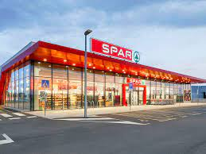
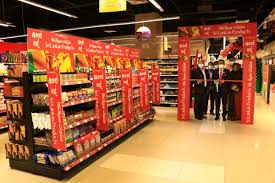
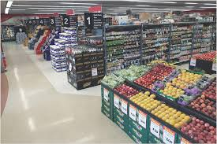

Come and find the 1 of 5 pharmacies found in spar south africa. It was only logical to provide customers with Pharmacy at SPAR, offering the convenience of a timesaving solution. Providing care and convenience.
SPAR South Africa was established in 1963 and operates four retail formats: SPAR Supermarkets, SPAR Express (operated in conjunction with Shell as a petrol forecourt store), KWIKSPAR (which focuses on convenience in city centres and high footfall locations), and SUPERSPAR (similar to EUROSPAR in offer).South Africa was the first country outside of Europe to join the SPAR organisation. SPAR South Africa grants sub-licences to independent retailers to operate stores under one of the four formats, with almost all the current store portfolio being independently owned. SPAR Group Ltd Southern Africa of which South Africa is a member also operates the brand in neighbouring territories in Africa, with interests in other markets.
  